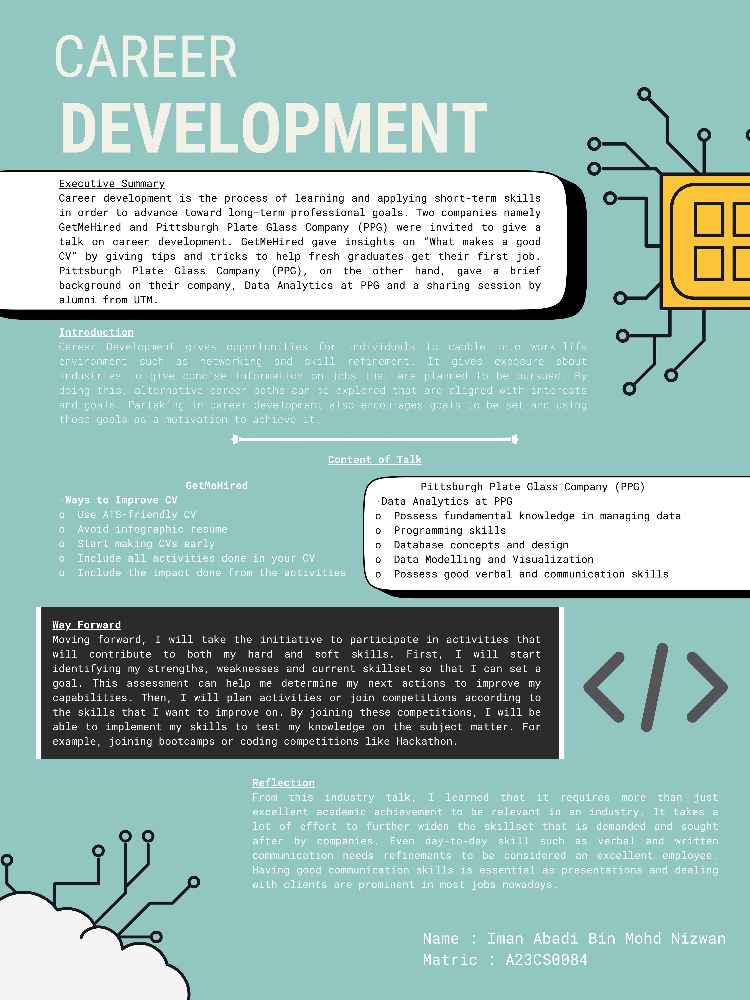
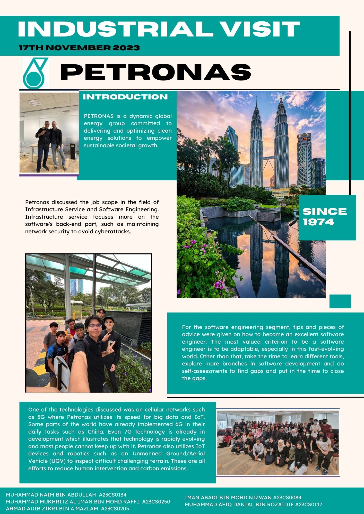
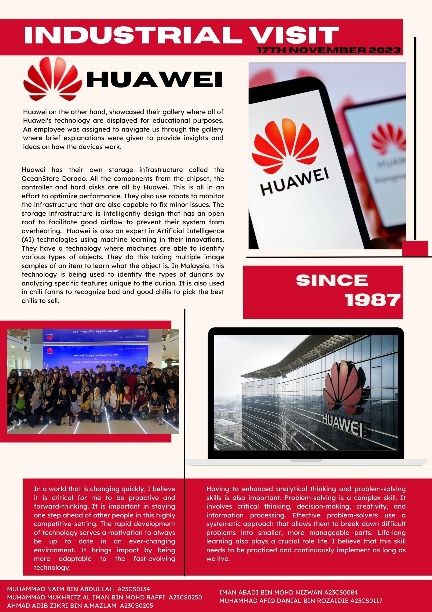

Assignments
Poster : Industry Talk and Visit by Pittsburgh Plate Glass Company (PPG) and GetMeHired
From this industry talk, I learned that it requires more than just excellent academic achievement to be relevant in an industry. It takes a lot of effort to widen further the skillset that companies demand and seek. Even day-to-day skill such as verbal and written communication needs refinements to be considered an excellent employee. Good communication skills are essential as presentations and dealing with clients are prominent in most jobs nowadays.
Video : Virtual Talk by UTM Digital and Visit to UTM Digital
The sharing session has been beneficial to us all as students. For example, we have been exposed to the places where the UTM Digital staff work, which is called Open Office. At the Open Office, we learn tasks the staff need to carry out, how they relieve their tension in leisure time and more. This session also made us realize that the university is not just a place for us to learn and take exams, but we also need to gain experience as much as possible, as much experience of how the industry works. For example, we need to improve on how to interact with the client or customers how to make a professional presentation and much more.
Report : Industry Talk by Credence a TM Subsidiary
From this session, I have been informed that to become a software developer, one must first familiarise with the key aspects of the software development cycle. Only by understanding the key aspects will then one be able to set a goal and fulfil the requirements in developing a robust and high-quality system. After that, I was also told that I have to master numerous technical skills such as programming skills from a wide range of languages such as C++ and JavaScript, data management skills using PostgreSQL and data manipulation skills from using both SQL and Python programming language. From there, I will also develop my self-learning skills that will later contribute to my career as being adaptable to this ever-evolving technological world. Lastly, I will improve my problem-solving skills, communication skills and positive work ethic by collaborating with people of different backgrounds to deliver the best result.
Newsletter : Industry Visit to Huawei and Petronas
This visit widens my perspective of how fast-evolving the world is right now. In a world that is changing quickly, I believe I must be proactive and forward-thinking. It is important to stay one step ahead of other people in this highly competitive setting. The rapid development of technology serves as a motivation to always be up to date in an ever-changing environment. It brings impact by being more adaptable to the fast-evolving technology. Having to enhance analytical thinking and problem-solving skills is also important. Problem-solving is a complex skill. It involves critical thinking, decision-making, creativity, and information processing. Effective problem-solvers use a systematic approach that allows them to break down difficult problems into smaller, more manageable parts. Life-long learning also plays a crucial role in life. I believe that this skill needs to be practised and continuously implemented as long as we live. I believe I must take severe precautions with my devices and online information because technology is developing quickly and cybersecurity has become a major concern for all.
 PC Assembly
From this activity, I was given the chance to be hands-on with the hardware components of a computer. This has vastly improved my knowledge of the hardware side of a computer. I was able to identify the components after the activity. This activity has also taught me how to assemble and disassemble the computer with the proper procedures. Each step was provided with tips on how to handle each component to avoid damaging it. After this session, I am confident that I am capable a computer on own in the future.
Design Thinking (Low Fidelity Prototype)
This activity has taught me how to be a better system developer. Each phase of the design thinking process has contributed significant value to me. Firstly, the empathy phase has taught me to become better at communication. It involved engaging with people through an interview to give their opinions on their troubles while using a specific technology in my case cloud computing.
I was able to ask proper questions that led to a crucial answer on how to solve that particular problem. Secondly, the define phase where I learn to identify the problem statement of the activity. I learned that having a proper problem statement is important as it helps me not to stray away from the topic at hand. It keeps me in check whether throughout the activity I still am within the topic and providing solutions that do not comply with the original intent.
After that, the ideate phase taught me how to generate the best possible solution. It starts by listing all possible solutions that have come to mind and eliminating after if it does not answer the original problem statement. It has also taught me to be a better team player as I exchanged opinions with my teammates when finding solutions so that we achieve the best possible one. Next, the prototype phase has helped me to be more creative by utilising everyday items to construct a low-fidelity prototype.
Using everyday items to construct a product is an impressive feat in my opinion. The effective use of items to construct a complex product provides an innovative impression. This activity has helped me achieve that. Lastly, the testing phase of the product. This phase has taught me to be more open on flaws that are present in the prototype. As an aspiring data engineer, this is a good practice for me because I will be addressing weaknesses in my system by fixing bugs and improving its code efficiency.
Youtube link can be accessed here.
- © Untitled
- Design: HTML5 UP